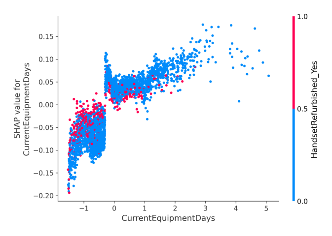
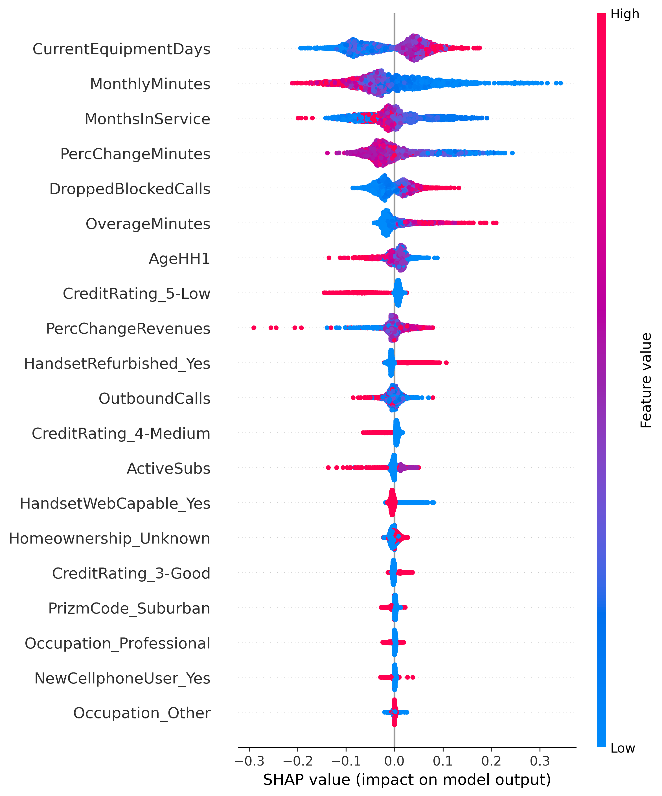

7 Discussion – Interpretation and Error Analysis
7.1 Global Interpretability and Feature Insights
The champion model’s global interpretability was assessed using SHAP values to quantify which variables most strongly drive churn predictions. The SHAP summary plot (Figure 7.1) shows that churn risk is primarily explained by a mix of device lifecycle timing, engagement, tenure, and service quality signals. The most influential predictors include CurrentEquipmentDays, MonthlyMinutes, MonthsInService, PercChangeMinutes, and DroppedBlockedCalls, followed by features such as OverageMinutes, AgeHH1, and credit-band indicators (e.g., CreditRating_5-Low). Importantly, these drivers align with plausible business mechanisms rather than suspicious identifiers, which provides a sanity check that the model is learning actionable behavioral patterns.
Several of the top features map directly to retention levers. CurrentEquipmentDays captures how long a customer has been on their current handset/equipment; higher values consistently push SHAP contributions upward, indicating higher churn risk. This supports a device-lifecycle interpretation: customers who have gone a long time without an equipment refresh are closer to a decision point and may be more receptive to switching offers. MonthlyMinutes is a direct engagement proxy: low usage contributes positively to churn risk, consistent with disengagement or declining relevance of the service. MonthsInService reflects tenure and loyalty; in general, longer-tenured customers exhibit lower predicted risk, while newer customers are more vulnerable, representing an intuitive pattern for subscription churn. In addition, PercChangeMinutes provides a “trend-like” signal even within snapshot features: large negative usage changes (usage drops) are associated with higher risk, which is consistent with early churn warning signs. Finally, DroppedBlockedCalls and related service-quality variables increase churn propensity, reflecting that persistent call failures or connectivity issues can trigger dissatisfaction and switching behavior. Together, the feature set suggests that the model is prioritizing variables that represent customer experience and engagement, which are exactly the kinds of signals operators can intervene on.

7.1.1 Non-Linear Feature Effects
Beyond ranking features, SHAP dependence plots reveal non-linear effects that would be difficult to summarize with a single coefficient. For CurrentEquipmentDays (Figure 7.2), churn risk rises as equipment tenure increases, but the pattern is not perfectly linear; the SHAP contributions show clustered regimes where risk increases more sharply after certain ranges, consistent with threshold-like upgrade cycles rather than a smooth monotonic slope. The interaction coloring by HandsetRefurbished_Yes suggests that customers with refurbished handsets (pink points) tend to cluster at lower equipment days but show similar SHAP patterns, while those with non-refurbished devices (blue points) span the full range of equipment tenure.
For MonthlyMinutes (Figure 7.3), the relationship is strongly asymmetric: customers in the very low-usage region receive the largest positive SHAP values (highest churn risk), while higher usage generally reduces risk (negative SHAP contributions). This supports a practical interpretation that “silent disengagement” is a major churn pathway in this dataset, and it also clarifies that the dominant signal is low engagement, not necessarily “very high usage.” The interaction coloring by PercChangeMinutes reveals an additional layer: among low-usage customers, those with declining usage trends (blue/purple points indicating negative percent change) tend to have even higher SHAP values, reinforcing the disengagement narrative.

7.1.2 Feature Interaction Insights
The SHAP interaction analysis reveals that the top feature pairs with meaningful interaction effects are:
CurrentEquipmentDays × MonthsInService: Customers with both old equipment and short tenure show elevated churn risk beyond what either feature alone would predict, suggesting a “new customer with outdated device” risk profile.
MonthlyMinutes × PercChangeMinutes: The combination of low current usage and declining trend creates a compounding effect, with the interaction term contributing additional risk beyond the main effects.
OverageMinutes × MonthlyRevenue: High overage charges relative to base revenue may signal billing dissatisfaction, with the interaction capturing customers who feel “nickel-and-dimed.”
These interaction patterns align with domain intuition and suggest that the model is capturing meaningful behavioral combinations rather than spurious correlations.
Overall, the global interpretability results point to a coherent churn story: customers are most at risk when they show aging equipment tenure, low or declining engagement, shorter tenure, and service reliability issues. This set of drivers naturally translates into operational playbooks (e.g., upgrade offers for long equipment tenure, proactive outreach for sharp usage drops, and targeted service remediation for customers experiencing repeated call failures).
7.2 Error Analysis
While overall performance was strong, revisiting the confusion matrix (Figure 6.10) provides deeper insight into the types of residual errors. The chosen operating point (threshold = 0.4400) favored recall (sensitivity to churners) by using a slightly lower decision threshold, which resulted in a higher number of true positives (churners correctly identified) at the expense of some false positives.
At this threshold, the model achieves:
- True Positives (TP): 1,087 churners correctly identified
- False Positives (FP): 1,875 non-churners incorrectly flagged as at-risk
- False Negatives (FN): 384 churners missed by the model
- True Negatives (TN): 1,759 non-churners correctly identified as stable
This translates to a recall of 73.9% (1,087 / 1,471 actual churners) and a precision of 36.7% (1,087 / 2,962 predicted churners). The model captures nearly three-quarters of actual churners, but inevitably some churners are missed.
7.2.1 False Negatives: The “Silent Churners”
These false negatives, specifically churners the model failed to flag, are especially concerning in a churn context because each missed churner is a lost opportunity for intervention. On inspection, many of these missed cases appear to be what might be called “silent churners”: customers who did churn but exhibited no strong warning signs in the available data. For example, some maintained steady usage until the end or had decent engagement metrics, giving the model little indication of their intent to leave.
One hypothesis is that these silent churners might be influenced by factors outside the dataset’s scope: perhaps a competitor offered them an attractive deal that cannot be observed internally, or life events (like moving to a non-serviced area or a job change) prompted their departure. Because the model was trained only on internal telecom data (billing, usage, support history, etc.), such external or unobserved triggers would lead to false negatives. Fundamentally, the model is limited to detecting churners exhibiting observable behavioral antecedents within the available feature space. Silent churners highlight the limits of the features, and they may have churned for reasons the data did not capture, remaining inscrutable to the prediction system.
7.2.2 False Positives: The Cost of Caution
On the other side, the model produces 1,875 false positives, defined as customers flagged as high risk who did not actually churn. False positives have a direct business cost: if retention teams act on these predictions, they might spend retention budget (such as offering a discount or special incentive) on customers who would have stayed anyway.
However, in a churn management context, some level of false positives is usually accepted in exchange for catching more true churners. The trade-off between false positives and false negatives is essentially one of precision vs. recall. The chosen threshold reflects a business decision to prioritize catching churners (higher recall) even if it means a moderate number of false alarms. This is because the cost of a missed churn (lost revenue and customer lifetime value) is typically much greater than the cost of an unnecessary retention offer.
That said, false positives must be managed by calibrating the intervention level to customer value (to avoid overspending on low-value customers who were not going to churn). Regular monitoring of the confusion matrix and performance metrics is important post-deployment: if false positives creep too high, the model’s threshold or features may need adjustment. Overall, the error analysis underlines that while the model significantly improves targeting, it is not perfect; understanding the errors allows refinement of strategies and clear communication of expected performance (not 100% recall) to stakeholders.
7.3 Interpreting the Autoencoder: Sanity Checks and Limited Gains
Because autoencoders are inherently unsupervised, sanity checks were added to verify that the model learned meaningful structure rather than noise. First, the latent vectors were visualized using t-SNE and colored by churn labels only for diagnostic purposes (labels were not used in training). Second, reconstruction error distributions were compared by label, revealing a small but consistent difference: churners had slightly higher reconstruction error (0.1639) than non-churners (0.1608), suggesting that churners may exhibit behavioral patterns that are harder to reconstruct with a compact representation.
Despite these qualitative signals, the DAE did not improve predictive metrics when appended to the supervised feature set. As reported in Section 6.5, using the baseline features alone (X only) achieved ROC-AUC = 0.6465 and PR-AUC = 0.4254, while augmenting with latent features (X+Z) yielded ROC-AUC = 0.6451 and PR-AUC = 0.4271, demonstrating essentially no meaningful improvement. Using latent features alone (Z only) substantially degraded performance (ROC-AUC = 0.6252, PR-AUC = 0.3872), confirming that the compressed representation retains substantial but not complete churn-relevant information.
A plausible explanation is that the baseline engineered feature set already captures most of the signal that is linearly or semi-linearly recoverable for churn prediction, so the bottleneck representation primarily compresses rather than contributes new predictive information. The autoencoder’s reconstruction objective optimizes for capturing variance in the feature space, but the variance-explaining directions may not align with the churn-discriminative directions. In addition, the pseudo-labeling extension produced only 2 confident pseudo-labels at the strict 0.0500/0.9500 threshold, which is far too few to materially change the decision boundary.
NotePractical Takeaway for an ML Engineering Audience
Even when predictive lift is limited, the unsupervised module is still valuable as an engineering capability: it provides a reusable representation learning component, a reproducible artifact set (checkpoint/history/latents), and a clear interface for future semi-supervised variants if more unlabeled data or better confidence calibration becomes available.
7.4 Managerial Implications and Business Impact
Accurately predicting churn is only valuable if it drives better business decisions. The model’s predictions enable targeted retention efforts, which are expected to yield substantial financial benefits. To illustrate the potential impact, a simple ROI simulation was conducted for a model-driven retention campaign with the following realistic business parameters:
| Parameter | Value | Description |
|---|---|---|
| Intervention Cost | $10 per customer | Cost of a special offer or support call |
| Customer LTV | $200 | Revenue profit if customer is retained long-term |
| Intervention Success Rate | 20% | Probability that outreach convinces at-risk customer to stay |
Under these assumptions, two strategies were compared: using the model to target the top-risk customers versus naive random targeting of customers.
7.4.1 Model-Driven Targeting
Imagine a telecom subscriber base where about 10% are truly going to churn in the near term. If the churn model is used to pick a top-decile segment of 1,000 customers most likely to churn, that segment will be enriched with real churners; for example, the model’s precision for the top decile is 30%, meaning about 300 of those 1,000 are actual impending churners (a threefold improvement over the base rate).
The retention campaign would contact all 1,000, costing $10,000. Out of the approximately 300 true churners in this group, at a 20% save rate, approximately 60 customers who would have left would be successfully retained. Those 60 saved customers represent an avoided revenue loss of approximately $12,000 (60 × $200 LTV each). Subtracting the $10,000 cost, the net gain is about $2,000 for this intervention.
7.4.2 Random Targeting (Baseline)
Compare this to random targeting of 1,000 customers. With no model, the expected churners in any random group of 1,000 (at 10% base churn) would be about 100. Using the same 20% success rate, only 20 customers would be saved (recovering $4,000 of value) while still spending $10,000, resulting in a net loss of $6,000.
This stark difference in outcomes (a positive ROI with model-driven targeting vs. a negative ROI with blind targeting) demonstrates the business value of the churn model. Even if the exact numbers are adjusted for actual churn rates and costs, the direction is clear: focusing retention efforts on the highest-risk customers yields a significantly higher return on investment (ROI).
7.4.3 Tiered Retention Playbook
Beyond the quantitative ROI, the model enables a more nuanced, efficient retention strategy. A tiered retention playbook is proposed that segments customers by both their churn risk and their value to the company, leveraging the model’s risk scores in conjunction with customer LTV or revenue metrics:
1. High Risk / High Value: These customers (for example, a long-tenured subscriber on an expensive plan who the model flags as likely to churn) should receive premium service interventions. This might entail a personal phone call from a retention specialist, a bespoke loyalty offer, or other high-touch intervention. The cost is higher, but so is the payoff; losing a high-value customer hurts revenue significantly, so extra effort is justified to keep them.
2. High Risk / Low Value: Customers predicted to churn who have a lower spend or profit profile should still be targeted, but in a more cost-effective way. For this tier, automated outreach is appropriate; for instance, a personalized SMS or email with a special discount, or an in-app notification offering a modest incentive. These interventions are low-cost and can be scaled easily. The attempt to save these customers is still made, but the investment is tailored to be commensurate with their value.
3. Low Risk (Any Value): Customers with a low predicted churn risk are generally left alone (no proactive retention action). This “do nothing” approach for low-risk segments conserves budget and avoids unnecessary contact. Importantly, refraining from intervening also prevents the “sleeping dog” phenomenon; contacting customers who are not at risk could inadvertently remind them of competitors or issues they had forgotten, possibly creating churn where there would have been none. Thus, the best action for low-risk customers is to continue providing good service and address needs if they arise, but not to invest in special retention efforts preemptively.
By implementing this three-tier strategy, management can ensure that retention resources are allocated efficiently: heavy investment goes only to those accounts where it’s most needed and most likely to pay off, while lighter-touch or no intervention is used elsewhere. This targeted approach, powered by the churn prediction model, not only improves ROI as shown above but also aligns with practical constraints of retention teams (which have limited budget and manpower). In summary, the model’s outputs can be directly translated into an action plan that maximizes customer lifetime value saved per dollar spent.
7.5 Limitations
While the results of this churn prediction study and its applications are promising, it is important to acknowledge the study’s limitations.
7.5.1 Static Snapshot Data
First, the modeling was based on relatively static, snapshot data. Each customer is represented by features aggregated up to a certain point in time (e.g., average usage, last month’s bill, whether they have overdue upgrades, etc.). This means the model does not explicitly incorporate time-series patterns or sudden changes in behavior leading up to churn.
Churn is often preceded by temporal signals; for instance, a customer’s data usage might decline for several months before cancellation, or there could be a spike in dropped calls or customer support tickets. Because the dataset did not include detailed sequential logs or longitudinal data, the model might miss these subtle trend-based indicators. In effect, churn is being predicted from a single-frame picture of the customer, rather than a movie of their behavior over time. This limitation could cause lower sensitivity to churn triggers that are only apparent when looking at how metrics evolve. Any abrupt shifts (say, a recent plunge in satisfaction rating or a sudden change in calling patterns) might be diluted or invisible in the snapshot features.
7.5.2 Unobserved Variables and Contextual Factors
Secondly, there are unobserved variables and contextual factors not captured in the dataset that likely play a role in churn:
Customer sentiment data: No access to satisfaction survey results, complaint logs, or social media feedback. Negative sentiment or unresolved service issues could be strong churn predictors; their absence means the model might not flag some dissatisfied customers.
Social network effects: In telecom, if a customer’s family or close friends leave the service (perhaps all on a shared plan or simply part of a local community), that customer is more likely to churn as well. The data did not reflect these peer effects or word-of-mouth influences.
Competitor actions: Price cuts or new offerings from a rival carrier can drive churn, but the model, being trained only on internal data, cannot foresee external enticements.
In summary, the model might be under-informed about certain churn drivers, which can manifest as the “silent churners” and some level of unexplained churn risk.
7.5.3 Performance Ceiling
Finally, it’s worth noting that the performance ceiling observed (AUC in the high 0.6700 range, with LightGBM achieving 0.6700 and XGBoost achieving 0.6637) indicates that even the best model leaves a substantial portion of churn variance unexplained. This is not a flaw of a particular algorithm but rather a reflection of churn’s inherent complexity and the limitations mentioned above. Thus, there is room for improvement by enhancing data and methodology.
Despite these limitations, the insights gained are valuable as a foundation. The next chapter discusses how future work can address some of these limitations, incorporating new data sources, methods, and deployment practices to further improve churn prediction and its business utility.